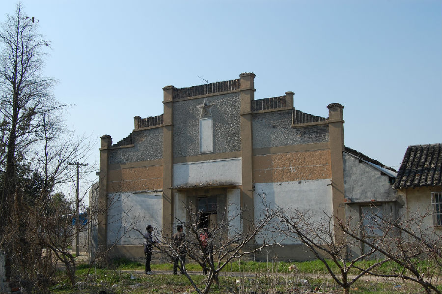

嘉兴市文物保护网 · 市级文物保护点 · 2020-11-09 · 原文

红旗大队大礼堂位于嘉兴市南湖区凤桥镇三星村24组，据周围村民介绍及其形制推断为20世纪60年代建，坐北朝南，建筑占地面积318.17平方米，面阔22.12米，进深14.38米，屋顶为5个人字形梁架构成，每个梁架间隔3.5米，层高为6.9米。礼堂内墙壁用红漆写有标语，西面为“坚持党的基本路线，深入开展农业学大寨运动”；东面为“全党动员，大办农业，为普及大寨县而奋斗”。舞台的两侧也有标语，左侧为“认真看书学习 弄通马克思主义”；右侧为“愚公移山 改造中国”。因其具有典型的文革时代烙印，展现了文革时期群众精神文化生活的一面，具有较高的历史价值。2009年公布为嘉兴市文物保护点。